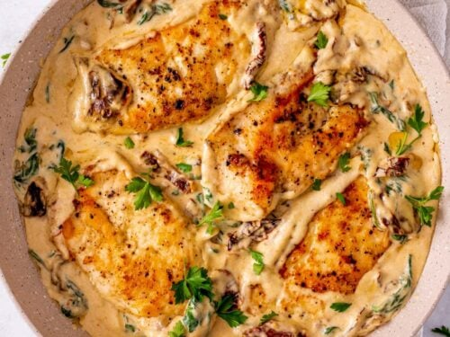

Marry Me Chicken

Description
Marry Me Chicken is a flavorful and creamy chicken dish featuring a creamy sauce with sun-dried tomatoes.
The name suggests that the dish is to delicious that it could inspire someone to propose marriage!
Ingredients
- Chicken Breast
- Flour
- Butter
- Heavy Cream
- Spinach optional
- Sun-dried Tomatoes
- Parmesan Cheese
- Garlic
- Salt and Pepper
Steps
- Season the chicken. Season the chicken fillets with salt and pepper and dredge them in flour.
- Cook the chicken. Add butter to a large skillet, add the chicken fillets to the pan, and cook for 6-8 minutes or until they are golden brown on both sides.
- Cook the sauce. Add the remaining butter to the hot pan along with the minced garlic. Cook until fragrant, then add the chopped sun-dried tomatoes and cream. Once it simmers, add the parmesan cheese and spinach.
- Put it all together. Bring the chicken back, cook for a few minutes, and serve immediately. Garnish with some fresh basil leaves, if desired.
What to serve with this?
- Grains and pasta
- Potatoes
- Sauteed vegetables
- Salad